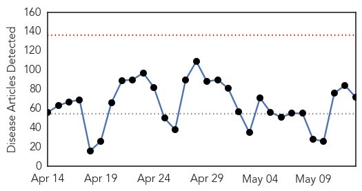
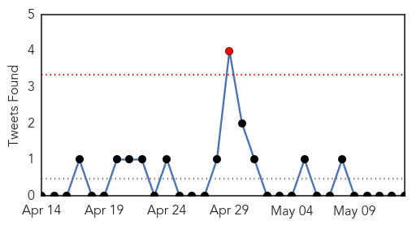

30 Day Trends
Web: 0 alerts, 0 warnings
Twitter: 1 alerts, 0 warnings
Top Articles:
- 0.976
- Lyme disease: Doctors advise against long-term antibiotic treatment Republican American
- 0.963
- How the worst avian flu outbreak in U.S. history is costing you money
- 0.947
- As the mercury soars, so does cases of gastroenteritis, typhoid in Mumbai
- 0.924
- Drug-resistant typhoid fever bacterium spreading, becoming deadlier, study says
- 0.917
- Chicago Tribune
- 0.917
- Chicago Tribune
- 0.917
- Chicago Tribune
- 0.917
- Chicago Tribune
- 0.917
- Chicago Tribune
- 0.917
- Chicago Tribune
- 0.917
- Chicago Tribune
- 0.917
- Chicago Tribune
- 0.917
- Chicago Tribune
- 0.917
- Chicago Tribune
- 0.917
- Chicago Tribune
- 0.917
- Chicago Tribune
- 0.917
- Chicago Tribune
- 0.917
- Chicago Tribune
- 0.917
- Chicago Tribune
- 0.917
- Chicago Tribune
- 0.917
- Chicago Tribune
- 0.917
- Chicago Tribune
- 0.917
- Chicago Tribune
- 0.917
- Chicago Tribune
- 0.917
- Chicago Tribune
- 0.917
- Chicago Tribune
- 0.917
- Montérégie at epicentre of uptick in Lyme disease in Quebec
- 0.910
- The world windows to Thailand
- 0.894
- Avian Flu Concerns: Poultry imports from Turkey stopped after reported outbreak - Health
- 0.866
- Attack on guest house in Afghan capital kills at least 5
- 0.844
- Victims twice over: MSF continues to assist people affected by the two earthquakes in Nepal
- 0.844
- Lyme in the islands?
- 0.811
- News Releases
- 0.808
- West Texas News
- 0.778
- De Europese migratieagenda: vragen en antwoorden
- 0.773
- Health officials not concerned about rise in Calgary tuberculosis cases - Calgary
- 0.759
- What a Global Typhoid Outbreak Means for the U.S.
- 0.750
- The nightmare of getting drugs in a govt hospital
- 0.719
- Tuberculosis case spurs call for testing at Kilgore College
- 0.708
- Nigria: Lead poising claims 28 lives in Niger State
- 0.707
- 97 cases of asphyxia due to dust storm in Kirkuk
- 0.690
- Sarkozy accused of racially charged rhetoric against ministers
- 0.680
- Divining Rod a Danger to American Pharoah in Preakness (también en Español)
- 0.653
- World: World Health Statistics 2015
- 0.651
- EU unveils migrant quota plan, offers UK opt-out
- 0.649
- Sorry, deze pagina kon niet gevonden worden.
- 0.637
- IS group claims responsibility for Karachi bus attack
- 0.635
- A History Of Leprosy, The Debilitating Disease Of Separation [PHOTOS]
- 0.635
- PAHO wants more trained nurses in the C'bean
- 0.610
- Exclusive: Burundi coup plotter says he had ‘no other option’
Showing top 50 articles...
Top Tweets:
-
No tweets found for May 13, 2015
Web/News Articles
Tweets
Article Locations

Article Confidences